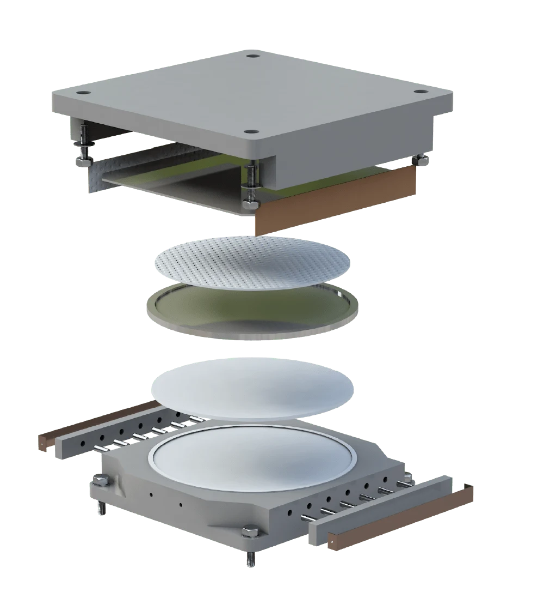
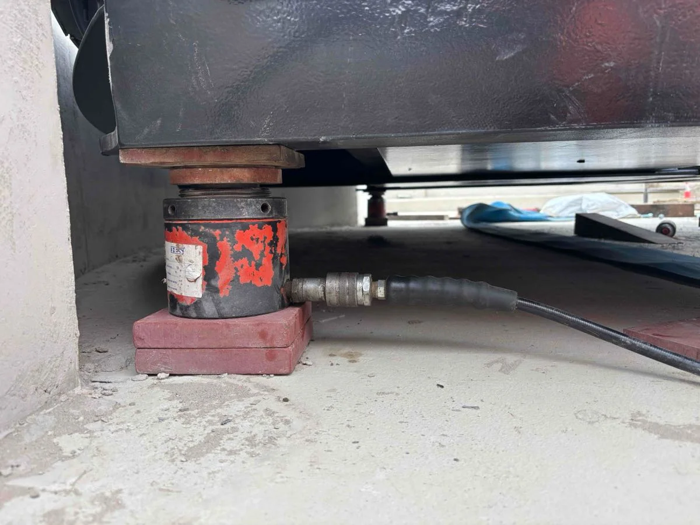

Bearing design.
Manufacture.
Installation.
Specialist bearing engineering, made in Sheffield.
Early involvement and temporary works connect design to site delivery.
From early involvement
to manufacture and site delivery.
Early contractor involvement
Practical engineering and delivery input, early in your project.
Explore ECI ↗Bearing design
Engineering for structural, industrial and bespoke bearing requirements.
Explore bearings ↗Manufacture
Bearings, bridges and mechanical projects. Made in Sheffield.
Explore manufacturing ↗Installation
Specialist installation, replacement, maintenance and repair.
Explore site services ↗Temporary works
Temporary support, controlled jacking and load transfer.
Discuss temporary works ↗THE EKSPAN BEARING RANGE
Find your
bearing.
For the way your structure
needs to move.

Explore the full rangeStructural bearings
Pot, spherical, elastomeric
and other structural bearing types.
Industrial bearings
EA and EQF sliding bearings
for industrial applications.
Bespoke bearings
Engineered solutions for
unusual movement requirements.
Not sure where to start?
Talk through your requirements with our team.
ENGINEERING THROUGH TO DELIVERY
Made in Sheffield.
Connected to site.
- 01 / ENGINEER
Start with the requirements.
Loads, movement, interfaces and buildability.
Bring EKSPAN in early ↗ - 02 / MANUFACTURE
Make it in Sheffield.
Machining, fabrication and assembly.
Explore the workshop ↗ - 03 / TRIAL ASSEMBLE
Bring the parts together.
Project-specific assembly and trial fitting.
See Wichelstowe ↗ - 04 / INSTALL
Connect workshop to site.
Installation, jacking and temporary support.
Explore site delivery ↗


The engineering.
In the real world.
Showing Wichelstowe: bridge manufacture and installation.

A crossing.
A connection.
A moving part.
Bushey Fox Bridge. Manufactured in Sheffield. Installed at Wichelstowe.
THE EKSPAN APPROACH
Engineering knowledge.
Hands-on experience.
WHERE DOES YOUR PROJECT START?
The right conversation.
From the start.
Let’s get your
project moving.
Tell us what you’re working on.
We’ll talk through the support you need.